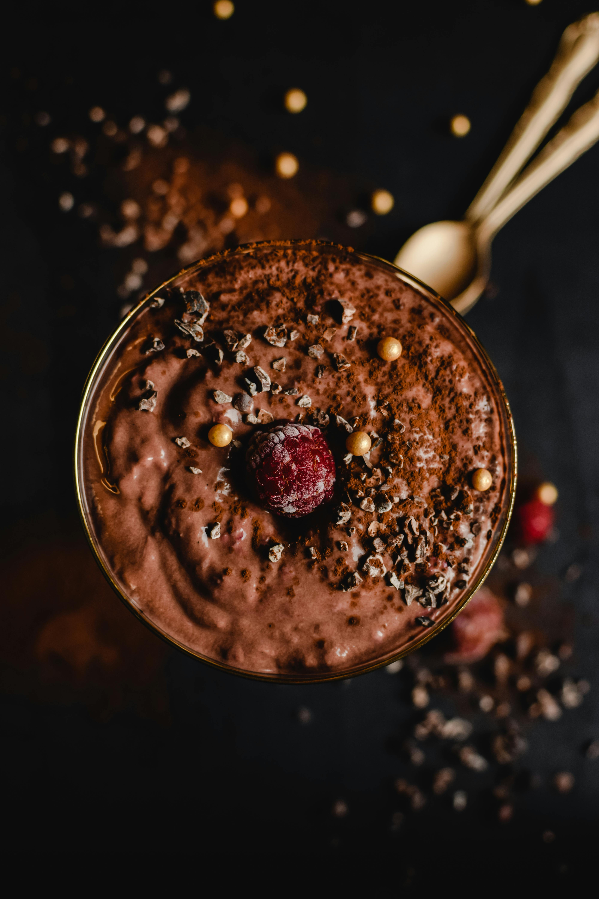

At Slate Milk, we believe in offering beverages that not only taste amazing but also provide your body with the nutrition it needs to perform at its best. Whether you're an athlete looking for a post-workout recovery shake, or someone on a keto diet seeking a low-sugar, high-protein option, Slate Milk is made for you. Our lactose-free shakes and iced coffees are specially crafted to support muscle recovery, weight management, and everyday energy—all without compromising on flavor.

How Ultrafiltration Enhances Your Protein Intake
Ultrafiltration is a natural and advanced process we use to separate lactose sugars from milk while concentrating its natural proteins. This is how we get more protein per bottle—without using added protein powders or artificial ingredients.
Thanks to this process, our drinks are:
- Higher in protein
- Low in sugar (0g added sugar)
- Completely lactose-free
The result is a smooth, creamy beverage that helps you build muscle, recover after workouts, and stay energized—all while being gentle on your stomach.
High-Protein, Lactose-Free, and Delicious
Each bottle of Slate Milk is 100% lactose-free, making it suitable for anyone who experiences dairy sensitivity or simply prefers dairy-free alternatives. That means no bloating, no discomfort—just clean, quality nutrition.
And don’t worry—we never sacrifice taste. Our high-protein milk shakes and iced coffees come in delicious flavors like Classic Chocolate that are rich, satisfying, and totally crave-worthy.
With 0g added sugar, Slate Milk provides sustained energy without the sugar crash. Whether it’s your breakfast on-the-go or your afternoon pick-me-up, you get all the benefits of a great-tasting shake that works with your health goals.
Why Choose Slate Milk for Your Daily Nutrition?
Here’s why more and more people are switching to Slate Milk:
- Lactose-Free Comfort: Enjoy all the benefits of milk without the digestive issues.
- High-Protein, Low-Sugar: Packed with clean protein and absolutely 0g added sugar.
- Keto-Friendly: Supports a low-carb lifestyle and won’t kick you out of ketosis.
- No Added Powders: Our protein comes naturally through ultrafiltration—no chalky textures here.
- Grab-and-Go Convenience: Ready to drink anytime, anywhere.
- Great Taste: With indulgent flavors like chocolate, Slate Milk proves that healthy can be delicious.
Slate Milk Products: The Best Protein Chocolate Milk
If you're a fan of chocolate milk but not the sugar and lactose it usually contains, our protein chocolate milk is the game-changer you've been waiting for. Rich, creamy, and naturally high in protein, it delivers the classic taste you love with the benefits you need—no added sugar, no lactose, and full of flavor.
Whether you're using it for muscle recovery or a delicious daily treat, it’s the best protein chocolate milk on the market.
Slate Milk for Every Time of Day
Slate Milk is incredibly versatile and fits into your routine whenever you need a boost:
Morning Fuel: A high-protein shake or iced coffee to start your day right.
Midday Energy: Keep your focus and avoid the sugar crash with a low-sugar drink.
Post-Workout Recovery: Replenish and rebuild with high-quality protein after exercise.
Evening Snack:Satisfy your sweet tooth without guilt or sugar overload.
Find Slate Milk Near You
Ready to experience the high-protein, low-sugar, lactose-free benefits of Slate Milk? Use our Find Stores page to locate a retailer near you or shop online to get it delivered straight to your door.
Slate Milk is more than just a drink—it’s a nutritional powerhouse that supports your health, performance, and lifestyle. From keto dieters to fitness lovers and busy professionals, our lactose-free, high-protein shakes and iced coffees are designed to help you feel and perform your best. Try Slate Milk today and taste the future of healthy, delicious dairy drinks.